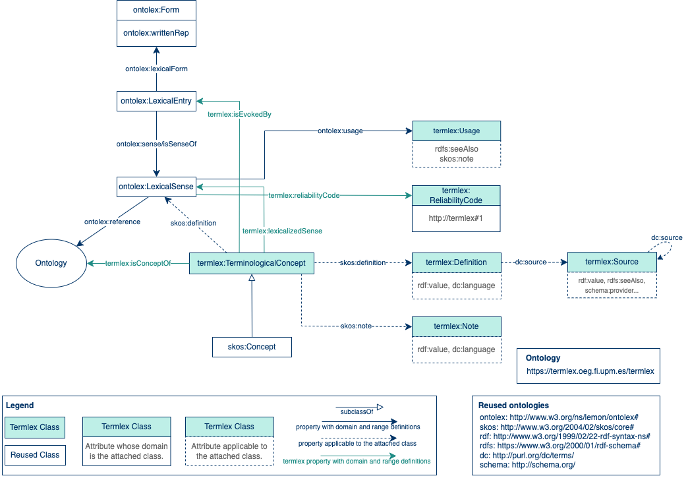
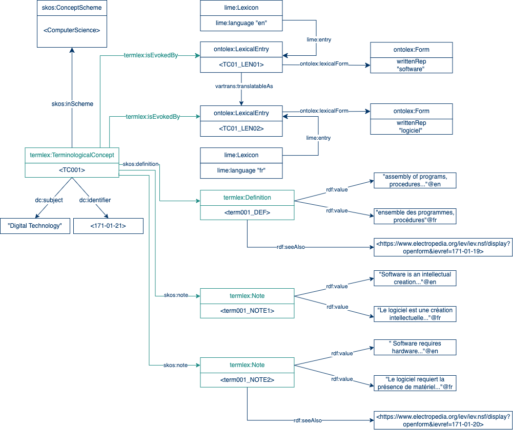
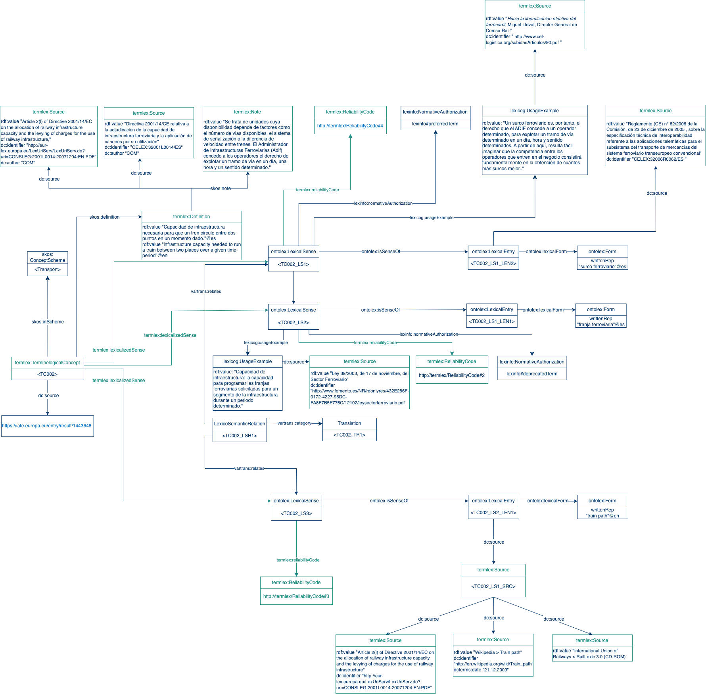
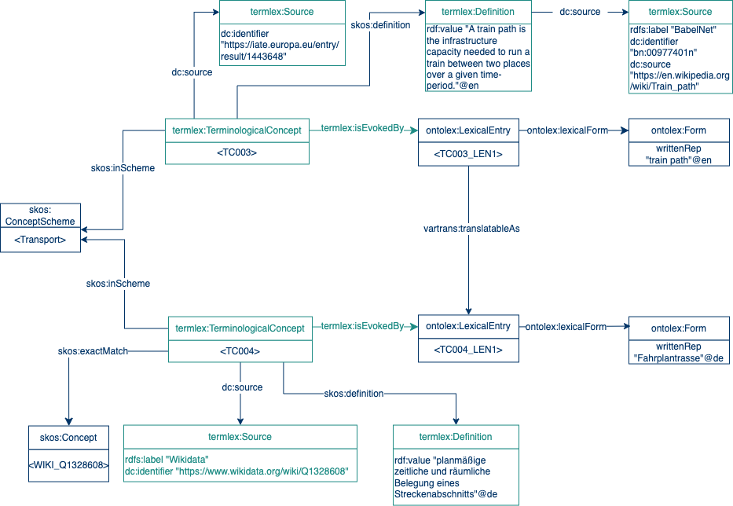

About Termlex
Termlex proposal is devised as an extension of the Ontolex vocabulary to model different types of terminological resources.

Use Cases
We have tested Termlex through a series of three use cases:
Simple Resources

Complex Resources

Automatically Generated Resources

Contact
This work has been developed by Ontology Engineering Group (Universidad Politécnica de Madrid) as part of the PhD. thesis of Patricia Martín-Chozas. For more information, send an email to pmchozas@fi.upm.es
This service is being developed within Prêt-à-Llod H2020 project (grant agreement No. 825182)
Code is availabe at Prêt-à-Llod Github repository.